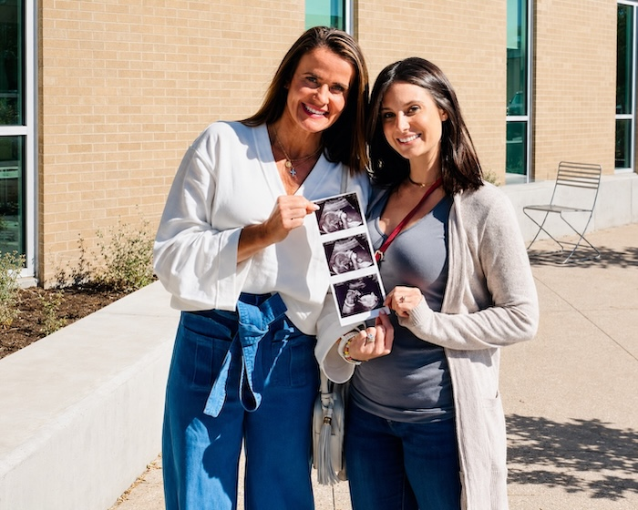

「我始终被告知、被尊重、
也被好好照顾。」
作为一名护士，我原以为没有什么能比接生更打动我。直到我成为那个让别人第一次抱起孩子的人——那是我人生中最深刻的时刻之一。
— 代孕妈妈 Sarah
97%
真诚的关系，才走得长久
97% 的代孕妈妈在旅程结束后，仍与准父母保持着积极而长久的联系。我们从不撮合“交易”，我们促成的是两个家庭之间真实的信任。
Your Journey with Babiology
踏出第一步
关于安全、安心、有意义地开始这段旅程，你需要知道的每一件事。整个周期通常为 12–18 个月。
01
免费咨询
30 分钟一对一沟通，了解你的情况与期待，说明流程、时间与费用结构。不收费，也不承诺任何你还没准备好的事。
02
医学与心理评估
由合作生殖中心完成体检、传染病筛查与心理评估；准父母同步完成促排或胚胎评估。
03
双向匹配
依据价值观、沟通方式与期待进行匹配，双方视频见面后共同决定。匹配成功前不产生任何服务费。
04
法律与移植周期
双方各自聘请独立律师签署协议，随后进入用药与胚胎移植周期，全程有顾问陪同就诊。
05
孕期与迎接新生
产检陪同、跨境行程与保险安排、出生证明与法律手续，直到宝宝平安回家。
Free Download
试管周期日历
下载一份完整的示例周期日历，看清每一个节点：什么时候用药、什么时候复查、什么时候移植、什么时候验孕。中英双语对照。
留下邮箱即可获取，我们不会将你的信息用于任何其他用途。